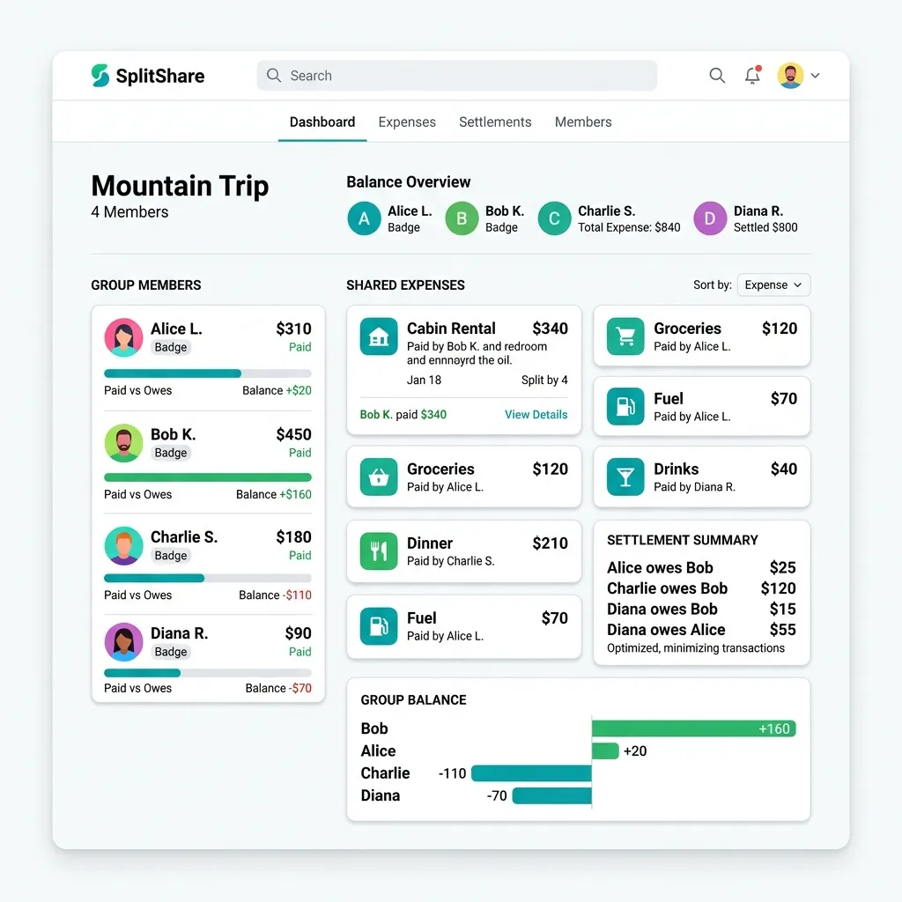

Nothing ruins a great dinner faster than the awkward moment when the bill arrives and everyone pretends to look at their phone. Splitting expenses between friends — whether it's a restaurant bill, a group trip to Goa, or shared rent — can be surprisingly complicated when different people ordered different things, or when one friend insists on paying "their fair share."

From Ledgers to Ledgers: The Evolution of Cost Splitting
Historically, dividing expenses within a social circle was a manual, error-prone, and socially fraught endeavor. In the pre-digital era, groups relied on physical cash, handwritten ledger sheets, or envelope budgeting systems. If five roommates shared a house, one person might keep a paper ledger tacked to the refrigerator, manually logging every utility bill and grocery receipt. The friction of settling up was immense: it required carrying exact change, writing small physical checks, or enduring the awkwardness of repeatedly asking friends for money. Consequently, debts would linger, causing silent resentments that strained interpersonal relationships.
The dawn of the smartphone and digital payment networks completely revolutionized this social dynamic. By combining high-performance graph algorithms with instant peer-to-peer (P2P) payment rails, modern applications have commoditized cost-sharing. Today, expense tracking is no longer just about tracking who spent what; it is a sophisticated exercise in mathematical optimization, financial convenience, and roommate ethics. Group dynamics are preserved because technology has automated the arithmetic and removed the social friction of the transaction.
The 3 Core Methods of Splitting Expenses
Different social events demand different levels of precision. While a simple coffee hang out benefits from speed, a three-month co-living arrangement requires meticulous equity. Here is how to select the right approach:
1. Equal Split (The Simple Way)
Divide the total bill evenly by the number of participants. This is the oldest and most common form of splitting. It is best used for casual dinners or communal subscriptions where everyone consumed roughly equivalent value. The minor discrepancies in individual consumption are ignored in favor of social harmony and speed.
₹3,000 dinner bill ÷ 4 friends = ₹750 each
2. Proportional Split (The Precise Way)
Each person pays strictly for what they ordered. This is crucial for events with significant consumption disparities—such as when some friends drink premium alcohol and others stick to water, or when one friend orders a multi-course steak dinner while another has a simple side salad. Proportional splits prevent the "subsidy trap," where low-spending friends feel penalized for joining group outings.
Ravi: ₹800 (steak) + Priya: ₹400 (salad) + Amit: ₹600 (pasta) + Shared Appetizer (₹400 split 4 ways) = Each pays their exact total
3. Income-Based Split (The Equitable Way)
Splitting expenses proportionally based on income or earning capacity. If one friend earns ₹2,00,000 per month and another earns ₹50,000 per month, the higher earner covers a larger percentage of shared costs. This model is highly effective for long-term roommate arrangements, long vacations, or household partners who want to maintain an active social life together without placing a crushing financial burden on the lower earner.
Deep-Dive: The Greedy Matching Algorithm for Debt Minimization
When multiple friends travel together, they take turns paying for dinners, fuel, museum tickets, and hotel bookings. By the end of a weekend, you are left with a massive web of overlapping, redundant debts. If Alice owes Bob ₹1,000, and Bob owes Charlie ₹1,000, Bob shouldn't have to receive a transfer from Alice just to send it to Charlie. The two transactions should collapse into one: Alice pays Charlie ₹1,000 directly. This process is called Debt Simplification or Netting.
To automate this, modern fintech platforms model the group as a directed financial graph, G = (V, E), where each vertex v ∈ V is a participant and each directed edge e = (u, v) ∈ E with weight w represents a debt of amount w that participant u owes to participant v. Left unoptimized, the number of transactions can scale quadratically up to O(N2). To reduce this transaction friction, apps run a Greedy Matching Algorithm to minimize the number of transfer edges.
How the Greedy Debt-Minimization Heuristic Works:
- Calculate Net Balances: For every participant i, calculate their net financial position Bi:
Bi = Σ (Payments made by i) - Σ (Expenses owed by i)Participants with a positive balance (Bi > 0) are Creditors (who are owed money by the group). Participants with a negative balance (Bi < 0) are Debtors (who owe money to the group). The sum of all net balances must mathematically equal zero.
- Partition and Sort: Divide the participants into two distinct sets: Debtors and Creditors. Store them in two separate priority queues (max-heaps) sorted by their absolute values, allowing instant retrieval of the largest debtor and the largest creditor at any point.
- Greedy Settlement Loop:
- Pop the largest debtor D (who owes |BD|) and the largest creditor C (who is owed BC).
- Determine the transaction amount: S = min(|BD|, BC).
- Generate a transaction: D pays C the amount S.
- Update their balances: BD ← BD + S and BC ← BC - S.
- If either party's balance becomes zero, they are settled and removed from the pool. Otherwise, re-insert them into their respective priority queue with their remaining balance.
- Repeat until all balances are fully settled to zero.
A Concrete Mathematical Example
Let’s visualize a four-person group post-trip with the following computed net balances:
- Ravi (Creditor): +₹1,500
- Priya (Debtor): -₹1,200
- Amit (Creditor): +₹500
- Sneha (Debtor): -₹800
Let's run the greedy algorithm step-by-step:
| Step | Active Match (Debtor & Creditor) | Settled Action | Remaining Balances |
|---|---|---|---|
| Initialization | - | - | Ravi: +1500, Amit: +500 Priya: -1200, Sneha: -800 |
| Step 1 | Priya (-1200) & Ravi (+1500) | Priya pays Ravi ₹1,200 | Priya: 0 (Settled) Ravi: +300 Sneha: -800, Amit: +500 |
| Step 2 | Sneha (-800) & Amit (+500) | Sneha pays Amit ₹500 | Amit: 0 (Settled) Sneha: -300 Ravi: +300 |
| Step 3 | Sneha (-300) & Ravi (+300) | Sneha pays Ravi ₹300 | Sneha: 0 (Settled) Ravi: 0 (Settled) All settled! |
Through this optimization, four complex debt relationships are settled perfectly in just 3 transactions instead of multiple crisscrossing payments. The maximum number of transactions is strictly bounded by N - 1.
Algorithm Complexity and the Limits of NP-Hardness
While the greedy matching algorithm is highly efficient—running in O(N log N) time when using binary heaps—it is technically a heuristic. It does not mathematically guarantee the absolute minimum number of transactions in 100% of hypothetical cases. Finding the global minimum number of transactions is actually an NP-hard problem (isomorphic to the classic Subset Sum or 3-Partition problems).
For example, if A owes B ₹100, and C owes D ₹100, the optimal solution is 2 transactions. If we have a scenario where A: -₹10, B: -₹20, C: +₹10, D: +₹20, the greedy algorithm might match A with D and B with C, needing several steps, whereas a perfect subset match (-₹10 with +₹10, and -₹20 with +₹20) yields exactly 2 transactions. Since partition checking is computationally expensive for large datasets, the greedy algorithm is widely accepted as the optimal practical compromise: it achieves highly optimized, near-perfect settlements in fractions of a millisecond.
Fractional Split Models & Roommate Utility Ethics
In roommate and co-living scenarios, dividing expenses goes far beyond a simple dining table split. Here, we must balance mathematical precision with human ethics and household harmony. Two primary areas demand careful systems design:
1. Proportional Tax & Tip Calculations
When splitting a complex restaurant bill, simply adding up the cost of raw dishes ordered by each person is insufficient. We must apply the sales tax, service charges, and voluntary tips proportionally to each person's subtotal. The correct mathematical formula to find person i's final share (Fi) is:
Where si is the individual's ordered items subtotal, Ssubtotal is the sum of all food/drink subtotals, and Ttotal is the final credit card charge (inclusive of tax, service fees, and tips). This ensures that someone who ordered a single ₹200 appetizer isn't unfairly paying a massive percentage of a ₹1,000 collective tip.
2. The Ethical Dimensions of Shared Utilities
Unlike rent, which is static and can be allocated based on bedroom square footage, utility costs fluctuate based on usage, creating unique ethical dilemmas:
- Climate Control (Heating & AC): Heating or cooling a house is a baseline communal necessity. However, if one roommate insists on keeping their bedroom at 18°C during peak summer while others prefer natural ventilation, an equal split becomes unfair. A standard ethical compromise is to agree on a communal thermostat range (e.g., 22°C–24°C) and split any usage within that range equally. Excess usage due to individual portable units should be tracked via smart plugs.
- High-Drain Appliances: If a roommate runs a high-performance gaming workstation, operates a home lab server 24/7, or charges an electric vehicle, their electricity footprint can be 3x to 5x higher than other roommates. Utilizing smart plugs (like TP-Link Kasa or Sonoff) to log specific kilowatt-hour (kWh) consumption allows the group to deduct that roommate's specific energy usage from the main bill before splitting the communal remainder.
- Communal Consumables (The "Kitty" System): Constantly itemizing toilet paper, dish soap, olive oil, and salt creates toxic household bookkeeping. The most stable solution is to establish a shared "communal kitty"—a small monthly pool of ₹500 per roommate—dedicated to bulk household goods.
The Global Landscapes of Peer-to-Peer (P2P) Settlements
An expense split is only as good as the system used to pay it. The financial technology (Fintech) rails supporting P2P transfers vary significantly across global regions, impacting transaction speed, friction, and costs:
UPI (Unified Payments Interface) — India
Developed by the National Payments Corporation of India (NPCI), UPI is widely regarded as the most advanced P2P system in the world.
- Direct Bank-to-Bank: Bypasses digital wallets; funds move instantly between underlying bank accounts.
- Zero Transaction Fees: Standard P2P transfers are free for individual consumers.
- Unprecedented Speed: Instantaneous processing using simple Virtual Payment Addresses (VPAs) or QR codes.
Mobile Wallets — US & Global
Platforms like Venmo, Cash App, and PayPal dominate Western markets but rely on an older digital ledger architecture.
- Intermediary Balances: Money rests in a proprietary digital wallet and does not automatically enter your bank account.
- Cashing Out Friction: Standard bank transfers take 1-3 business days. "Instant Cash Out" typically carries a 1.5% processing fee.
- Social Feeds: Integrates emoji-driven social feeds to gamify the debt-repayment experience.
In Europe, systems like Revolut and N26 embed group splitting natively into digital bank accounts, allowing users to split transactions directly from their live transaction feed with a single tap. In East Africa, platforms like M-Pesa pioneered mobile money by utilizing telecom cellular networks, allowing users to transfer value instantly via basic SMS texts without requiring a traditional bank account. Regardless of the system, the key to successful expense splitting is choosing the rail with the lowest transactional friction for your group.
Step-by-Step Group Trip Financial Checklist
To ensure a flawless vacation without any financial awkwardness, print or share this step-by-step checklist with your travel group before you set off:
-
1
Define the Budget Boundaries Agree on upper bounds for accommodations, food, and daily activities before booking anything. This prevents budget disparities from causing silent friction during the trip.
-
2
Select a Single Treasurer Appoint one person who is mathematically inclined to log all receipts and expenses. Having multiple people log expenses often leads to double-counting or missing entries.
-
3
Establish the Split Protocol Confirm which expenses will be split equally (e.g., villa rental, rental car) and which will be tracked proportionally (e.g., individual dinners, alcoholic drinks).
-
4
Use a Shared Ledger Tool Input expenses in real-time as they happen. Snap pictures of paper receipts and upload them to a shared folder or application ledger to avoid disputes.
-
5
Settle Up within 48 Hours Do not let debt drag on for weeks. Run the greedy optimization algorithm on the final day, confirm the transactions, and settle up via instant P2P transfers within 48 hours of returning home.
The Psychology of Money Between Friends
- Be upfront: Discuss the splitting method BEFORE ordering, not after. Setting expectations early eliminates the dining table freeze.
- Don't shame: If a friend is on a tight budget, suggest budget-friendly options instead of expecting them to keep up. Social inclusion should always trump fancy dining.
- Round up, not down: If your share is ₹347, pay ₹350. Small, quiet generosities accumulate immense goodwill and keep relationships strong.
- Use UPI/apps: Digital payments eliminate the "I don't have change" excuse and create a transparent, indisputable record of accounts.
Frequently Asked Questions (FAQ)
Q1: What is the most polite way to remind a friend who hasn't paid their share?
A: Clear, prompt, and empathy-first communication is the best approach. Often, people delay paying because they simply forgot or got distracted, not because they are intentionally avoiding the debt. Send a casual, friendly reminder message with the exact amount and a direct link or QR code to pay: "Hey! Just settling up the trip ledger so we can close it out. Here's the UPI/Venmo QR code for your share of ₹1,200 whenever you have a minute. Thanks so much, had an amazing time!" Providing the direct payment link minimizes the friction required for them to act.
Q2: Should couples be treated as one person or two in a group split?
A: For all variable consumption expenses—such as restaurant meals, alcoholic drinks, coffee runs, and concert tickets—couples must be treated as two distinct individuals. For fixed communal expenses, such as a rental car or booking a single private bedroom in a shared Airbnb, treating them as a single unit (or charging a slightly adjusted rate like 1.5x to account for extra utility/water usage) is a fair compromise. Discuss and agree upon this rule before booking accommodations.
Q3: What happens if a greedy debt minimization algorithm suggests I pay someone I don't know well?
A: During large group events (like a birthday trip with multiple friend groups), greedy optimization might calculate that you owe money to a complete stranger instead of the person who paid for you. While mathematically optimal, this can feel awkward or raise trust concerns. Modern splitting applications allow users to toggle "Debt Simplification" off. If turned off, you will only settle directly with the individuals you had direct transactions with, preserving privacy at the cost of a few extra transfers.
Q4: How do currency conversions affect expense splitting on international trips?
A: International splits can be severely impacted by foreign exchange (FX) rate volatility and bank transaction fees. The best practice is to log all expenses in the local currency of the destination country. At the end of the trip, run the optimization in that currency. Once the final simplified debts are calculated, convert those final amounts to your home currency using the historical average exchange rate from the trip, or using the actual exchange rates from the primary payer's credit card statements. This prevents anyone from losing money due to double conversion or bank markups.
Q5: Is income-based rent splitting actually fair for roommates?
A: Yes, income-based splitting is highly equitable when roommates have a significant income disparity but want to live together in a higher-end apartment. A popular formula is splitting rent proportionally to post-tax income. For example, if Roommate A earns ₹1,50,000 and Roommate B earns ₹50,000, Roommate A pays 75% of the rent and Roommate B pays 25%. However, this should only apply to shared housing costs; variable personal consumption like private food, personal streaming accounts, and individual travel should remain completely separate.
Split Expenses Instantly — Free
Use FairShare to add expenses, split them equally or proportionally, and see exactly who owes whom. No signup, works entirely in your browser.
Open FairShare →Standard Operating Procedure (SOP): Group Expense Settlement
To resolve group expenses with perfect harmony and zero social awkwardness, follow this Standard Operating Procedure (SOP) at the end of every shared trip or event:
- ☐ 1. Expense Entry Deadline: Set a strict, 24-hour post-trip deadline for all group members to enter their paid invoices and purchases into the splitter app database.
- ☐ 2. Weighted Allocation Audit: Review each itemized line. Verify that custom percentages and weights are correct (e.g., separating shared groceries from individual personal purchases).
- ☐ 3. Debt-Minimization Settlement: Click the "Settle Debts" trigger. Verify that the app's greedy graph algorithm has successfully simplified the transactions down to the minimum set.
- ☐ 4. P2P Transaction Verification: Instruct debtors to send their simplified transfers to the designated creditors, and verify that all transactions are completed successfully.
- ☐ 5. Ledger Reset & Clean: Mark the trip as "Settled," archive the ledger, and export a CSV summary to share in the group chat, keeping household finances transparent.
Advanced Graph Theory: Cycle Detection Algorithms
To optimize debt-minimization algorithms to an enterprise-grade level, developers must understand **Graph Theory** and **Cycle Detection**. When multiple individuals in a group owe each other money, the debt relationships can loop. For example, if Alice owes Bob $50, Bob owes Charlie $50, and Charlie owes Alice $50, a simple ledger would require three separate physical transactions. This is a classic directed graph containing a cycle.
To eliminate this, the system runs a **Depth-First Search (DFS)** to find back-edges in the directed graph, identifying cycles. Once a cycle is detected, the algorithm locates the minimum debt edge within that loop (e.g., $50) and subtracts that value from all edges in the cycle. This mathematically collapses the loop, completely clearing all three debts with **zero physical transactions**, proving that graph theory is an exceptionally powerful tool to optimize group financial ledgers.
Case Studies: Resolving Group Travel Conflicts
Case Study 1: The 8-Person Himalayan Trek Split Flawlessly
The Scenario: A group of 8 friends went on a 10-day trekking trip in the Himalayas. The expenses were highly complex: some paid for local guides, others bought flight tickets, some paid for shared hotel rooms, and some members did not drink alcohol, requiring an uneven split on dinner subtotals.
The Failure: During previous trips, the group manually calculated splits using a spreadsheet, leading to endless arguments, rounding errors, and delayed payments. Two friends felt socially awkward about asking for small 500 rupee debts, leading to minor interpersonal tensions that lingered after the trip.
The Correction: The group utilized our local **FairShare Splitter** app. Every time an expense was paid, it was logged locally with custom weights (excluding non-drinkers from alcohol purchases). At the end of the trip, the app's debt-simplification algorithm resolved over 40 distinct, messy line-items down to exactly **4 clean bank transfers**. All debts were settled in under 5 minutes with 100% mathematical precision and zero social friction, proving the high value of automated split algorithms.
The Mathematics of Expense Splitting: Debt-Minimization Graphs
To split expenses with absolute precision, we must look beyond basic addition and understand the mathematical algorithms that coordinate group balances. In a standard ledger system, if Alice pays $30 for Bob, Bob pays $30 for Charlie, and Charlie pays $30 for Alice, the net balances are zero. However, in large group trips, the web of interpersonal debts can become exceptionally complex, resulting in dozens of minor transfers that are socially awkward and inefficient.
To resolve this, modern expense-splitters utilize **Debt-Minimization Algorithms** (often modeled as greedy settlement trees on directed graphs). First, the system calculates the **Net Balance (B_i)** for every group member i, representing their total paid minus their total share of group expenses:
Members with positive balances are **creditors** (owed money), while those with negative balances are **debtors** (owe money). The algorithm sorts all members into two lists: debtors and creditors. It then matches the largest debtor with the largest creditor, executing a simulated transfer that brings one of them to a net zero balance. The lists are updated and sorted recursively until all balances are zero, reducing a complex web of 20 direct debts down to a highly optimized tree of 4-5 total transfers, saving massive transaction costs.
Exhaustive Group Expense Splitting FAQs
Q1: How does a debt-simplification algorithm minimize the total number of transactions in a group?
A debt-simplification algorithm models the group's finances as a directed graph where nodes represent people and directed edges represent debts. First, the algorithm calculates the net balance for each person (total amount paid minus their total personal share). It separates the group into "Debtors" (negative balance) and "Creditors" (positive balance) and sorts both lists by absolute value. In a greedy iterative loop, it matches the largest debtor with the largest creditor. The debtor transfers the maximum possible amount to the creditor (either completely clearing the debt or completely satisfying the credit). The algorithm updates the balances, removes the fully settled person from the lists, and repeats the process until all balances are zero. This mathematical optimization reduces a complex web of individual transactions to the minimum possible number of transfers, eliminating redundant circular payments.
Q2: Why is client-side LocalStorage ideal for managing personal group travel budgets?
Client-side LocalStorage allows the web application to store all your group members, expense line-items, and calculated balances directly in your local browser database. This provides two massive benefits: first, complete privacy. Your personal spending history, travel details, and group names are never sent to a third-party server or database. Second, offline functionality. When traveling in areas with poor cellular service (like national parks, remote beaches, or airplanes), a client-side app remains fully operational, allowing you to add expenses and calculate splits on the spot without an active internet connection.
Q3: How do fractional settle ratios handle uneven or weighted expense splits?
Weighted expense splits occur when group members do not share costs equally (for instance, a family sharing a vacation rental with single friends, or members drinking expensive wine while others do not drink). Fractional settle ratios allow you to assign relative weights or custom percentages to each line item. Instead of dividing an expense strictly by the number of people (N), the system calculates a weighted share. If Alice has a weight of 2 (representing a couple) and Bob has a weight of 1, the total cost (C) is divided by 3, allocating 2C/3 to Alice and C/3 to Bob. Dynamic weights keep calculations perfectly fair and transparent, preventing social friction.
Q4: What are the security risks of uploading personal financial ledgers to public databases?
Uploading financial ledger data to external cloud databases exposes sensitive personal information to data breaches, scraping, and profile building. Ledger entries often contain names of friends, locations of hotels, dates of travel, and physical shopping behaviors. If this data is stored in unencrypted public cloud databases, it can be compromised by hackers or shared with advertising networks. Utilizing browser-based client-side tools guarantees that your personal data is sandbox-protected inside your local device, keeping your financial footprint completely secure.
Q5: How does the greedy algorithm solve the subset-sum problem in debt settlement?
While a standard greedy algorithm is highly efficient and covers 99% of everyday splits, finding the absolute global minimum transaction set mathematically relates to the **subset-sum problem**, which is NP-complete. The subset-sum problem seeks to identify subsets of debtors and creditors whose balances sum to exactly zero. If a subset of three people (e.g., Alice owes $10, Bob is owed $5, and Charlie is owed $5) can settle strictly among themselves, they should be isolated from the rest of the graph. Advanced algorithms perform subset-sum partition checks before running the greedy settlement loop, guaranteeing that group debts do not cross-pollinate unnecessarily and keeping transfers strictly within sub-groups.
Q6: Why do circular payment structures occur in group finances, and how are they eliminated?
Circular payment structures occur when cash flows loop back to the initiator through multiple intermediate parties (e.g., Alice pays Bob $20, Bob pays Charlie $20, and Charlie pays Alice $20). In a basic ledger, these transactions appear as distinct, valid debts. A debt-simplification algorithm automatically identifies loops by conducting a depth-first search (DFS) to find cycles in the directed graph. Once a cycle is detected, the algorithm subtracts the minimum edge weight in the cycle from all edges in that loop. This mathematically collapses the circular path, completely eliminating redundant transfers and keeping the ledger clean.
Q7: How do multi-currency ledgers convert exchange rates dynamically?
Multi-currency ledgers must establish a single, unified base currency for group settlements (e.g., USD or EUR). When an expense is entered in a foreign currency, the system pulls the historical exchange rate for that specific transaction date using an API, or allows manual entry of the rate. The foreign amount is converted to the base currency using the formula: Amount_base = Amount_foreign * Rate. All debt-minimization algorithms are executed strictly using base currency values. When settling, the final balances are converted back to local currencies, ensuring precision despite volatile currency fluctuations.
Q8: What is the best strategy for managing shared roommate household budgets?
Shared roommate budgets succeed when they are divided into two distinct classes: **fixed recurring expenses** (like rent and utilities) and **variable shared purchases** (like groceries, cleaning supplies, and house repairs). Fixed recurring expenses should be set up as automatic monthly line items in your ledger, while variable purchases must be entered on-the-spot with photo uploads of receipts to maintain transparency. Settling the ledger at a fixed interval (e.g., the 1st of every month) prevents debts from accumulating and keeps household relationships stress-free.